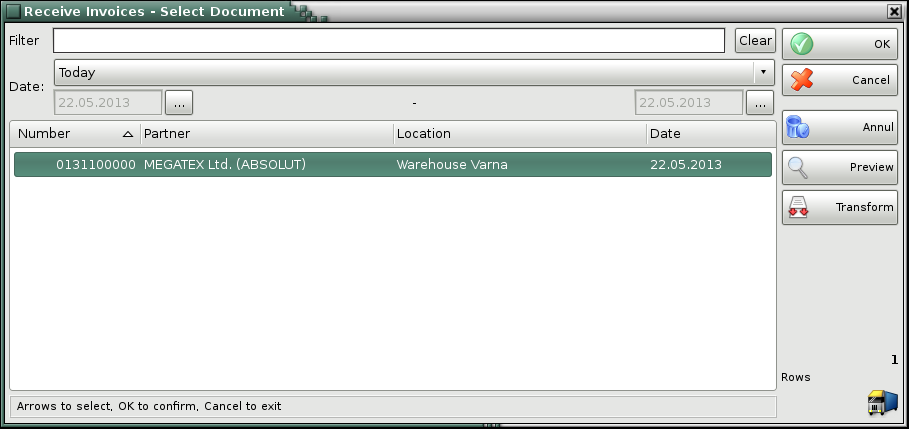
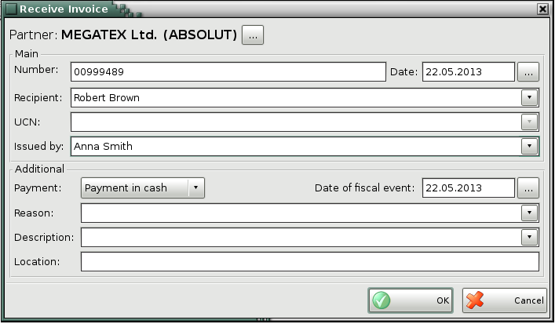

Receive Invoice
You can use the Receive Invoice window (use keyboard
shortcut Ctrl+F7 to open it) to transform a selected purchases
document into an invoice. The sequence is as follows:
1. Create a
purchases document (stock receipt);
2. Attach a new document to the
first one. The new document will be the invoice.
You can use the first
document (stock receipt) to represent the expenses form the item and its
delivery into the warehouse. The second document is a tax representation of the
deal and determines the type of the official document.
Generally, an invoice
can be issued only based on an existing stock receipt. The invoice and the stock
receipt contain a list of the same items and are for the same amount.

In the Select Document windows elect the purchase document, based on which the invoice will be issued.
The invoiced documents will be coloured in red.

Use the Receive invoice window to enter main information in the invoice: document number, date of issuing, recipient, recipient�s UCN and the name of the person issuing the document. You can enter additional data as well: payment type (in cash, via bank or via card), date of fiscal event, reason for the transaction, description and location of the deal.
�2006-2015 Microinvest, All Rights Reserved